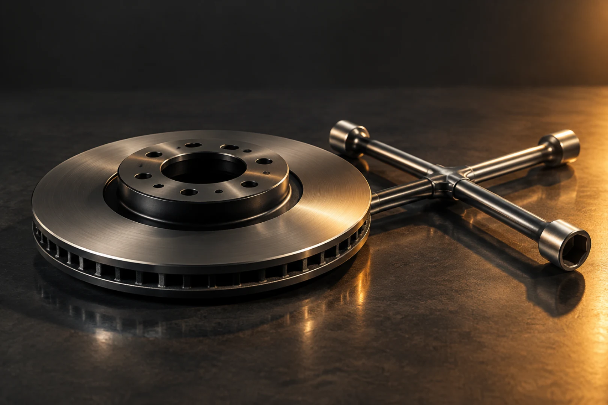
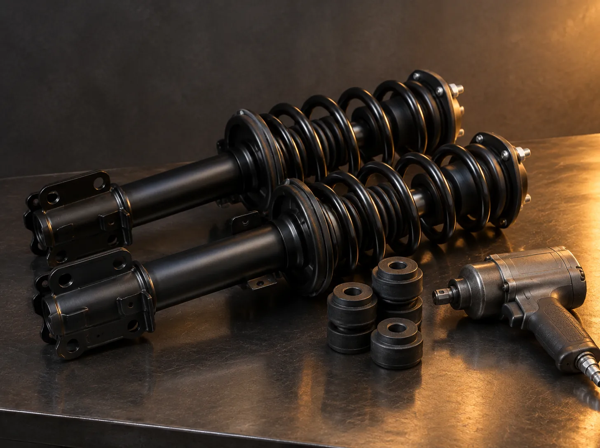
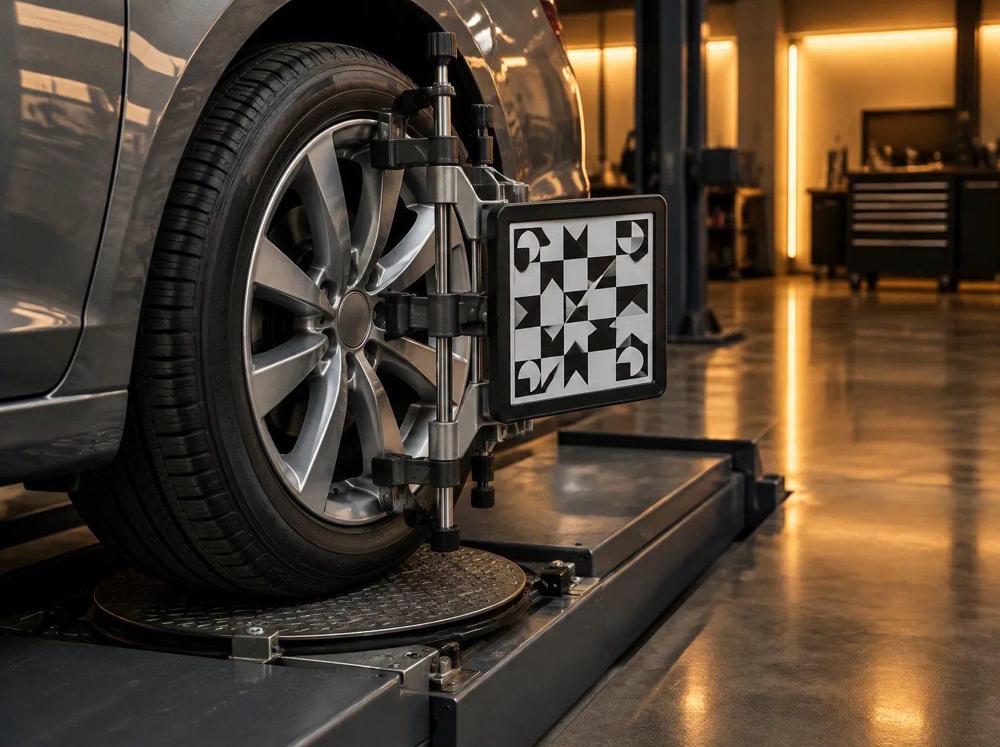
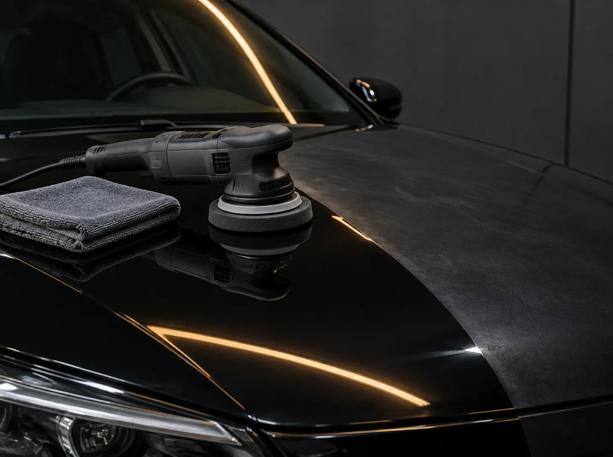
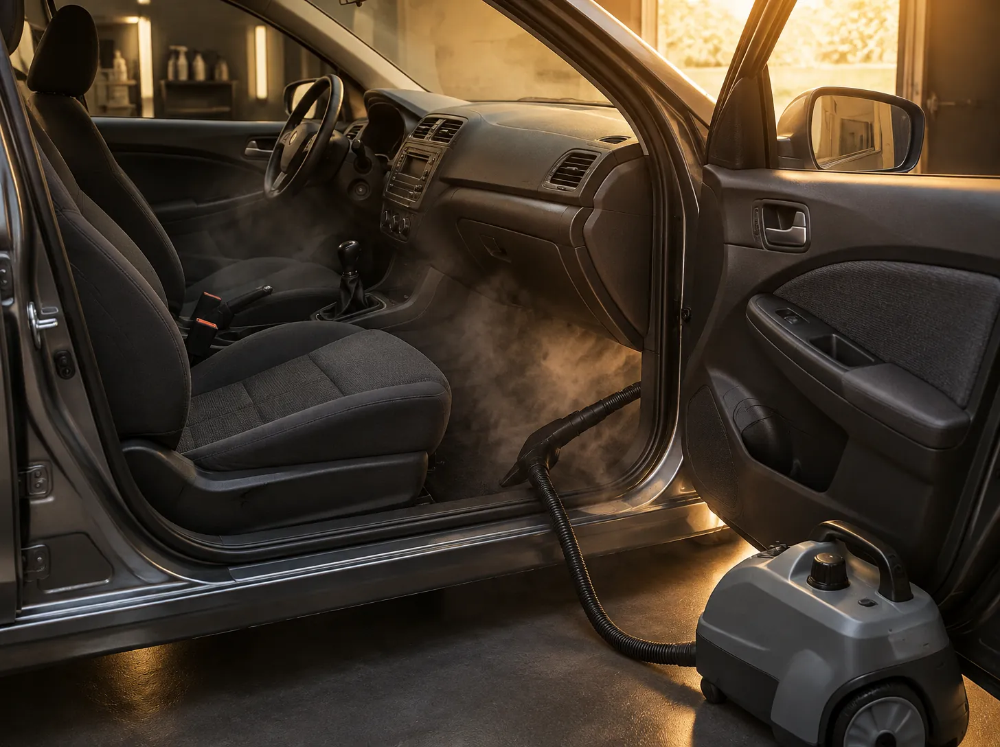
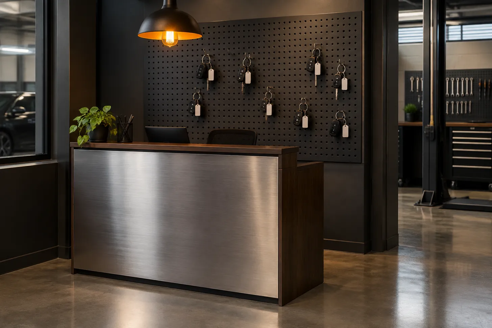

Oficina mecânica e estética automotiva em Cuiabá
Seu carro de volta na rua, com hora marcada e no fim.
Aqui você monta a revisão do seu carro e vê o preço antes de vir, escolhe o horário, pede para a gente buscar e acompanha cada etapa pela placa. O orçamento que você aprovou é o que você paga.
- Prazo médio de entrega
- 0h
- Itens checados por revisão
- 40itens
- Garantia do serviço
- 90dias

O que a gente faz, com preço de partida.
Seis serviços, cada um com o valor mínimo real. O preço final sai do diagnóstico, por escrito, antes de qualquer peça ser trocada.
-
a partir de R$ 340
Revisão por quilometragem
Roteiro de 10 a 60 mil km, com checklist de 40 pontos e fotos das peças.
-
a partir de R$ 290
Freios
Pastilhas, discos, fluido e sangria. Medimos a espessura e mostramos antes de trocar.
-

a partir de R$ 420
Suspensão
Amortecedores, molas, buchas e bieletas. Acaba com o barulho e com o pulo na lombada.
-

a partir de R$ 160
Alinhamento e balanceamento
Em equipamento 3D. Inclui calibragem e laudo impresso com os ângulos.
-

a partir de R$ 450
Polimento técnico
Correção de riscos e vitrificação. A pintura volta a refletir o céu, não o estacionamento.
-

a partir de R$ 220
Higienização interna
Bancos, teto, carpete e ar-condicionado com ozônio. Sai o cheiro, fica o carro.
Monte sua revisão e veja o preço agora.
Escolha o tipo do seu carro e a quilometragem que está chegando. A lista do que entra e o valor aparecem na hora. Preços de exemplo, para demonstração.
Revisão de 10 mil km, hatch compacto
R$0
Cerca de 3 horas na oficina
O que entra
Marque o dia e o horário. Se quiser, a gente busca.
Escolha o serviço, o dia e uma vaga livre. Com leva e traz, você informa o bairro e a gente combina a busca. Nada é enviado: o resumo aparece aqui na tela.
Onde está o meu carro?
Digite a placa e veja em que etapa o serviço está, com o horário de cada passo. Para testar, use uma das placas de exemplo.
Exemplos:
Placa
- Carro
- Serviço
- Mecânico responsável
- Previsão
Quando trocar o óleo de novo?
Informe o que está no adesivo do para-brisa e a quilometragem de hoje. A gente calcula quanto falta, por km e por data, o que vencer primeiro.
Quem já deixou o carro com a gente.

A oficina
- Endereço
- Av. Fictícia, 650, Bairro Exemplo, Cuiabá, MT
- Horário
- Segunda a sexta, 8h às 18h. Sábado, 8h às 13h.
- Telefone
- (65) 3000-0065 (número fictício)
- Equipe
- 3 mecânicos, 1 esteticista automotivo e 1 pessoa na recepção
Aceitamos cartão, Pix e parcelamento em até 6 vezes no serviço. Garantia de 90 dias em mão de obra, peças conforme o fabricante.
Como isto funciona
Este site é uma demonstração. Aqui está o que ele faz, em três níveis de detalhe.
Para quem só quer usar
Você monta a revisão e vê o preço, escolhe dia e horário, pede leva e traz, acompanha o carro pela placa e descobre quando trocar o óleo. Tudo funciona na hora, sem cadastro. Nada do que você digita sai do seu celular ou computador: é um exemplo de como seria o site de uma oficina de verdade.
Para quem quer entender por dentro
A página é um arquivo de texto (HTML) que o navegador desenha, uma folha de estilo (CSS) que dá as cores, fontes e o padrão do piso, e um programa pequeno (JavaScript) que faz as contas. Os preços, horários e placas estão numa tabela dentro desse programa. Quando você clica em "SUV" e "40 mil km", ele soma os itens daquela revisão, multiplica pelo fator do carro e escreve o resultado na tela. O agendamento só é guardado se você marcar a caixa, e fica no armazenamento do próprio navegador.
Detalhes técnicos
- HTML, CSS e JavaScript puros, sem framework, sem CDN e sem fonte externa. Fontes Barlow e Barlow Condensed em woff2 locais (SIL OFL).
Content-Security-Policypor meta:default-src 'self', sem script inline, sem estilo inline no HTML,connect-src 'none',form-action 'none'. Os únicos estilos dinâmicos (largura da barra do lembrete de óleo, posição do brilho nos painéis e atrasos da revelação ao rolar) são aplicados viaelement.style.setProperty, permitido pela CSP.- Dados fictícios em
js/dados.js(um objetowindow.ROTA65). Lógica emjs/app.js, em módulos por função: revisão, agendamento, acompanhamento, óleo, depoimentos, menu e contador. - Agendamento: os dias são gerados a partir de hoje (segunda a sábado, 8 dias úteis); vagas ocupadas vêm de uma tabela por dia da semana. Validação da placa no padrão Mercosul e antigo (
^[A-Z]{3}[0-9][A-Z0-9][0-9]{2}$). Ao marcar "guardar", a lista vai paralocalStoragena chaverota65-agendamentos, emtry/catch. - Acessibilidade: contraste AA em todos os pares, foco visível com anel âmbar, chips como
input type=radioreais, regiõesaria-livenos resultados,prefers-reduced-motionrespeitado (revelação ao rolar, faixa que rola, pulso das pílulas e abertura do hero desligam). - Movimento sem biblioteca: revelação ao rolar com
IntersectionObserver, títulos divididos em linhas por JavaScript para oclip-path, faixa de compromissos em SVG com@keyframes, barra do topo que troca de tema ao cruzar a faixa clara. - Testes em
tests/site.cjscom Playwright: 1280x900, iPhone 13 e 320 px; conferem console, rolagem horizontal, texto cortado e cada função.